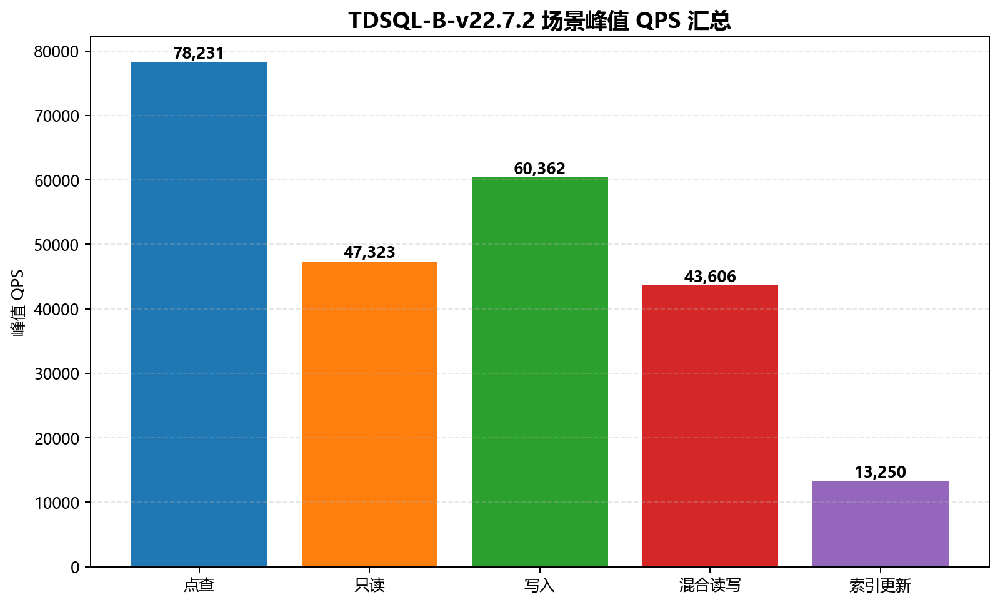
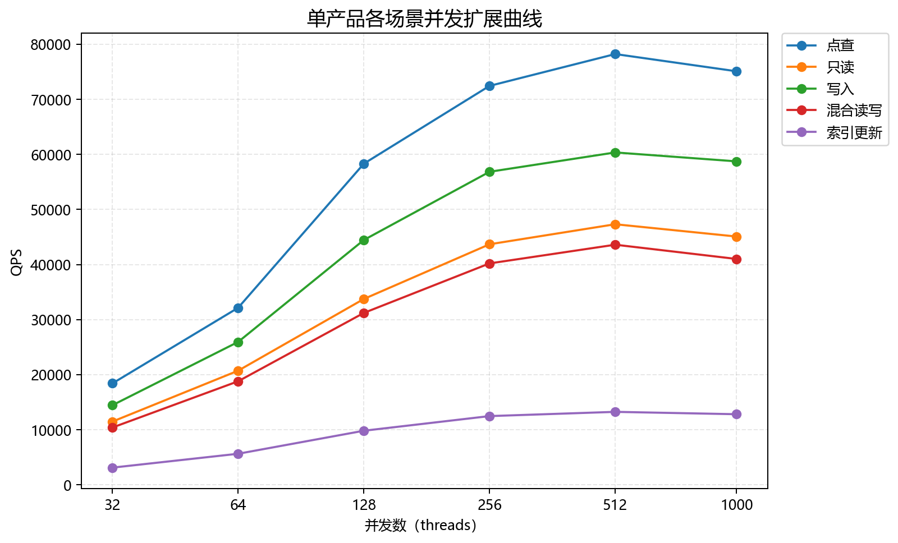
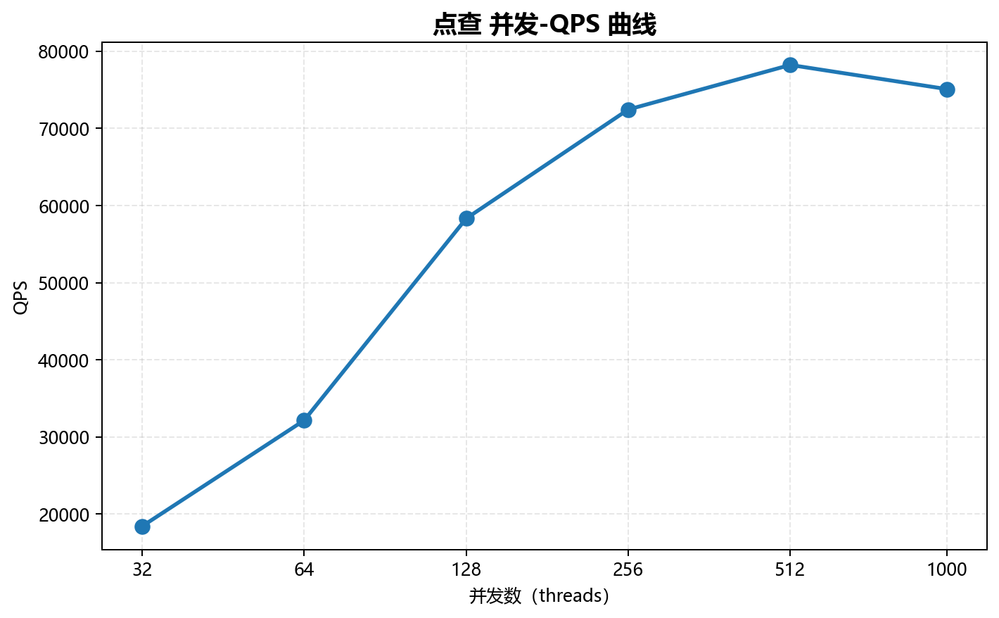
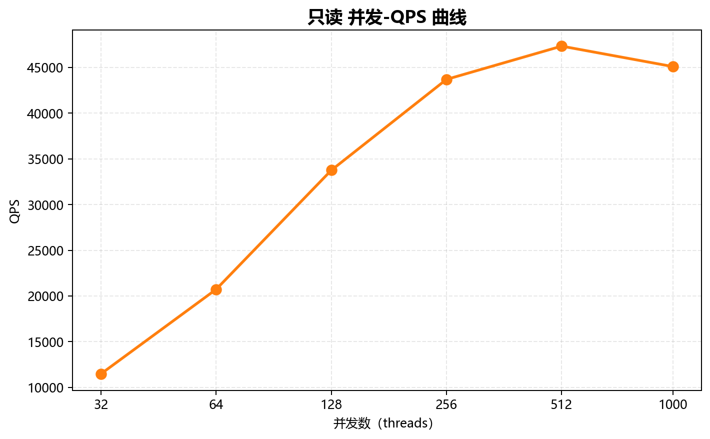
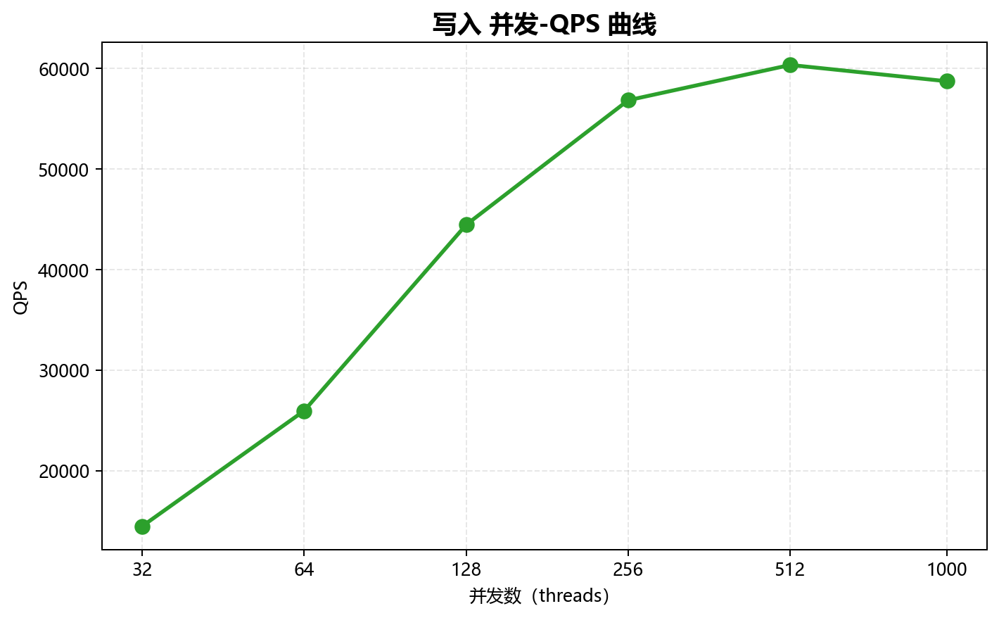
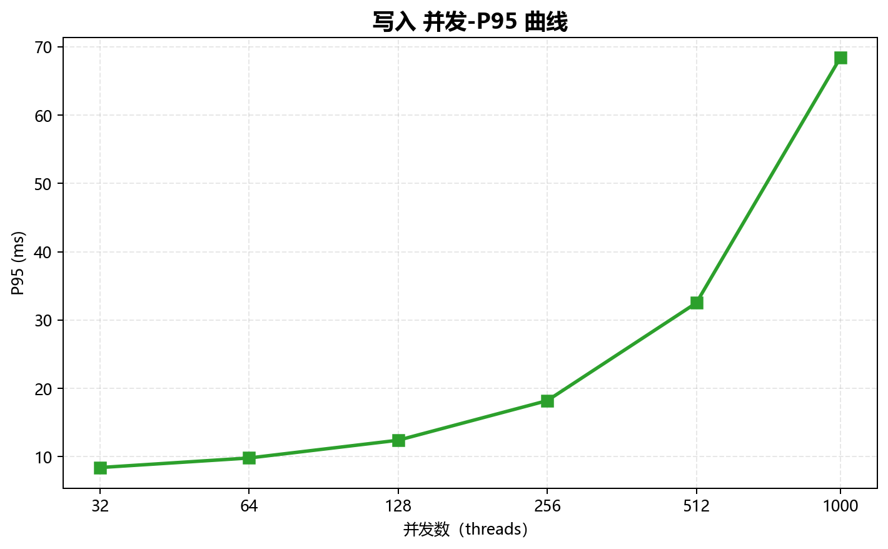
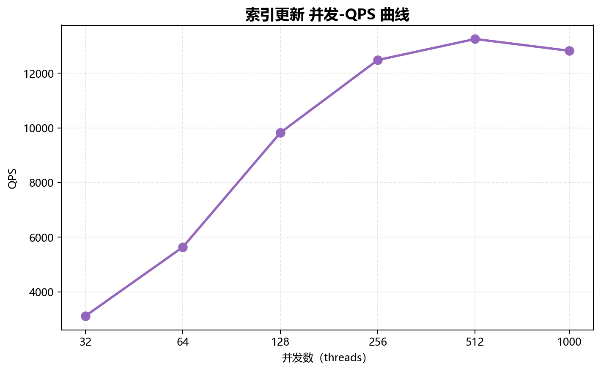
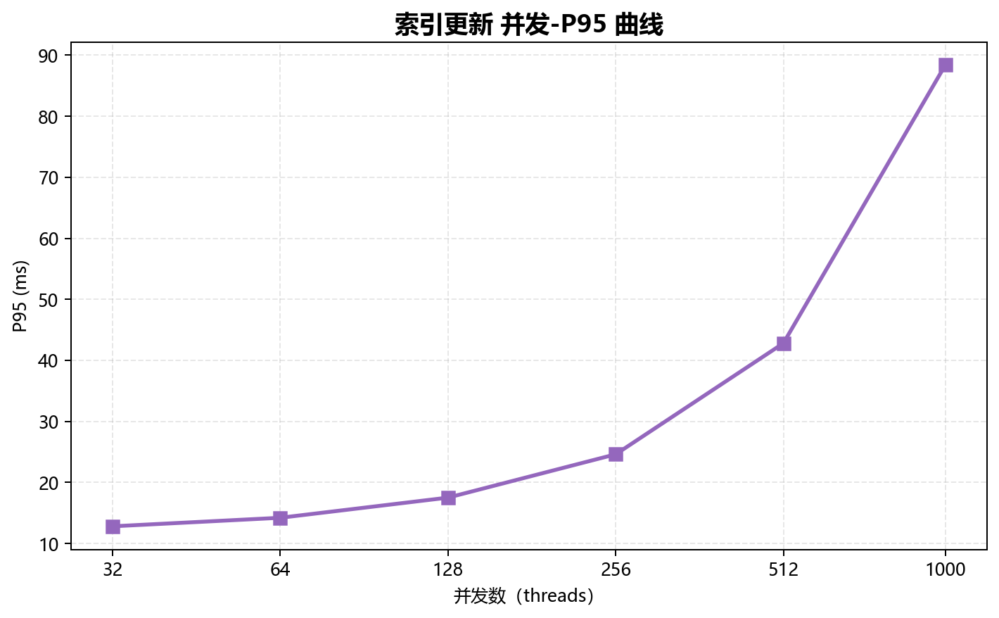

第 1 章 测试结论
1.1 测试结论摘要
TDSQL-B-v22.7.2 在 2026-06-10 14:00:00 开始的 sysbench OLTP 测试中，覆盖 5 个独立场景及 6 个并发档（32, 64, 128, 256, 512, 1000），共 30 条记录。原日志标注 Duration: 300s；本报告将其保留为单项测试时长，不将其当作整份日志总耗时。所有场景的已测峰值均出现在 512 并发。各场景独立分析，不合并均值。
1.2 关键性能数字
| 场景 | 峰值并发 | 峰值 TPS | 峰值 QPS | P95@峰值 (ms) | P99@峰值 (ms) |
|---|
| 点查 | 512 | 78,230.60 | 78,230.60 | 8.90 | 15.40 |
| 只读 | 512 | 3,380.20 | 47,322.80 | 158.40 | 224.50 |
| 写入 | 512 | 20,120.80 | 60,362.40 | 32.50 | 58.20 |
| 混合读写 | 512 | 2,180.30 | 43,606.00 | 248.20 | 358.10 |
| 索引更新 | 512 | 13,250.40 | 13,250.40 | 42.80 | 72.50 |
1.3 核心结论

图：TDSQL-B-v22.7.2 各独立场景的峰值 QPS；柱上标签四舍五入，精确数值见表
第 2 章 测试环境
2.1 数据库配置
| 项 | 源日志值 |
|---|
| 产品及版本 | TDSQL-B-v22.7.2 |
| 测试起始时间 | 2026-06-10 14:00:00 |
| DB 端点 | 10.0.0.11:3306 |
| 数据集 | tables=16, table_size=1000000, prepare=true |
| 测试时长 | 300s（Duration: 300s） |
| 报告生成时间 | 2026-06-19T16:00:00+08:00（任务固定时间） |
2.2 硬件环境
源日志未提供 CPU、内存、存储、网络、操作系统以及数据库运行参数；上述信息均记为未提供，不能据此判断硬件容量或资源瓶颈。
2.3 测试方法
工具为 sysbench，工具版本未提供。并发档完整保留为 [32, 64, 128, 256, 512, 1000]，日志统一标注测试时长 300s。TPS 为事务每秒，QPS 为查询每秒，P95/P99 分别为第 95/99 百分位延迟（ms）。
| 场景字段 | 说明 |
|---|
| oltp_point_select | 点查 |
| oltp_read_only | 只读 |
| oltp_write_only | 写入 |
| oltp_read_write | 混合读写 |
| oltp_update_index | 索引更新 |
各场景具有不同事务组成，不能据场景间 QPS 大小直接判定业务优劣。源文件是汇总日志，没有提供完整 sysbench 命令、预热规则和重复测试轮次。
2.4 数据质量与公平性
| 检查项 | 结果 |
|---|
| 记录数与覆盖 | 1 产品 × 5 场景 × 6 并发档 = 30 条；无重复、无缺档 |
| TPS / QPS / P95 / P99 空值率 | 0% / 0% / 0% / 0% |
| 原始指标核对 | 30 条 × 4 项指标逐项核对一致，保留两位小数 |
| 数据来源 | data/single.log |
| 数据集与时长 | 单一日志头，全场景使用同一数据集和 Duration 标注 |
| 公平性范围 | 单产品报告；无跨产品公平性结论；硬件环境未提供（WEAK） |
测试时区未在日志注明，保留原始时间，不进行时区换算。记录中的时刻为源日志逐项标记，不推算实际结束时间或整轮总耗时。
第 4 章 性能分析

图：TDSQL-B-v22.7.2 各场景独立 QPS 曲线（不作均值或综合评分）
4.1 点查（oltp_point_select）

图：点查 并发-QPS 曲线；横轴为以 2 为底的对数刻度，覆盖全部并发档
 图：点查 并发-P95 曲线；横轴为以 2 为底的对数刻度，覆盖全部并发档
图：点查 并发-P95 曲线；横轴为以 2 为底的对数刻度，覆盖全部并发档
延迟稳定性：从 32 到 1,000 并发，P95 2.10→18.20 ms，P99 3.40→32.10 ms；最高并发的 P95 为峰值 QPS 档位的 2.04 倍。未提供延迟 SLA，故不判定达标与否。
4.2 只读（oltp_read_only）

图：只读 并发-QPS 曲线；横轴为以 2 为底的对数刻度，覆盖全部并发档
 图：只读 并发-P95 曲线；横轴为以 2 为底的对数刻度，覆盖全部并发档
图：只读 并发-P95 曲线；横轴为以 2 为底的对数刻度，覆盖全部并发档
延迟稳定性：从 32 到 1,000 并发，P95 42.10→320.10 ms，P99 58.30→458.20 ms；最高并发的 P95 为峰值 QPS 档位的 2.02 倍。未提供延迟 SLA，故不判定达标与否。
4.3 写入（oltp_write_only）

图：写入 并发-QPS 曲线；横轴为以 2 为底的对数刻度，覆盖全部并发档

图：写入 并发-P95 曲线；横轴为以 2 为底的对数刻度，覆盖全部并发档
延迟稳定性：从 32 到 1,000 并发，P95 8.40→68.40 ms，P99 14.20→124.30 ms；最高并发的 P95 为峰值 QPS 档位的 2.10 倍。未提供延迟 SLA，故不判定达标与否。
4.4 混合读写（oltp_read_write）
 图：混合读写 并发-QPS 曲线；横轴为以 2 为底的对数刻度，覆盖全部并发档
图：混合读写 并发-QPS 曲线；横轴为以 2 为底的对数刻度，覆盖全部并发档
 图：混合读写 并发-P95 曲线；横轴为以 2 为底的对数刻度，覆盖全部并发档
图：混合读写 并发-P95 曲线；横轴为以 2 为底的对数刻度，覆盖全部并发档
延迟稳定性：从 32 到 1,000 并发，P95 72.30→512.30 ms，P99 98.50→748.40 ms；最高并发的 P95 为峰值 QPS 档位的 2.06 倍。未提供延迟 SLA，故不判定达标与否。
4.5 索引更新（oltp_update_index）

图：索引更新 并发-QPS 曲线；横轴为以 2 为底的对数刻度，覆盖全部并发档

图：索引更新 并发-P95 曲线；横轴为以 2 为底的对数刻度，覆盖全部并发档
延迟稳定性：从 32 到 1,000 并发，P95 12.80→88.40 ms，P99 20.40→152.30 ms；最高并发的 P95 为峰值 QPS 档位的 2.07 倍。未提供延迟 SLA，故不判定达标与否。
第 5 章 优化建议
5.1 后续验证与调优建议
全部场景的已测 QPS 峰值位于 512 并发。建议在该档位附近补充测试并发点，并结合业务延迟目标选择并发上限；本次数据不足以直接给出生产连接池上限。
建议在保持现有数据集与时长一致的条件下重复测试，并同步记录 CPU、内存、磁盘、锁等待及缓存命中数据，再判断吞吐回落原因。没有资源观测数据，不给出具体 Buffer Pool 比例或未经验证的数据库参数。
5.2 测试边界
仅覆盖本日志的 TDSQL-B-v22.7.2、单一数据集、5 个场景和 6 个并发档。未提供重复测试、误差范围、资源监控或线上业务验证数据；结论仅描述已测档位。
本报告不补造缺失数据，不由尾延迟变化推断具体瓶颈，也不把单次基准结果外推为生产容量或持续稳定性保证。